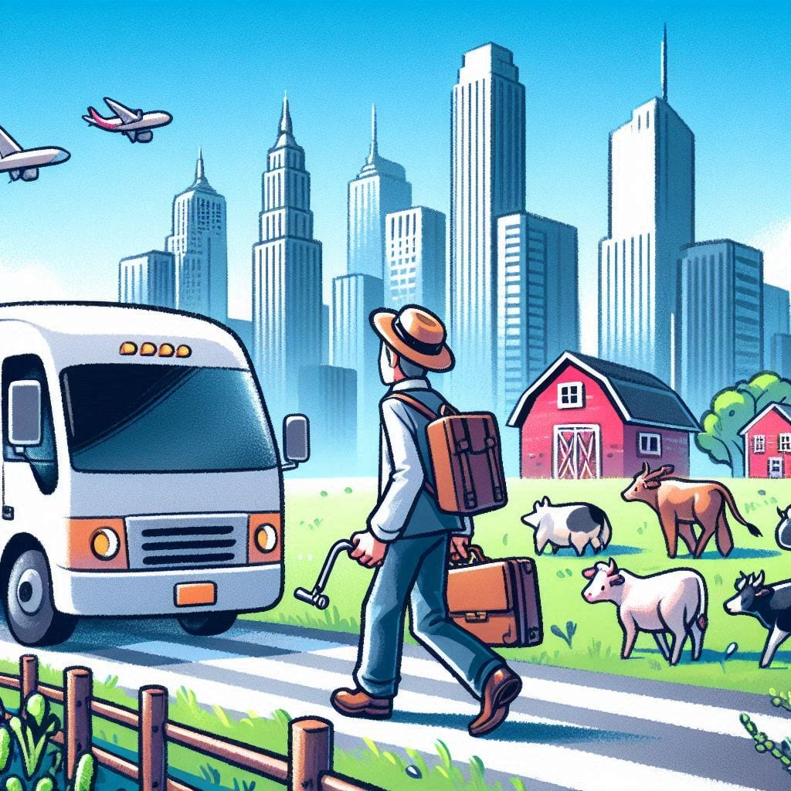
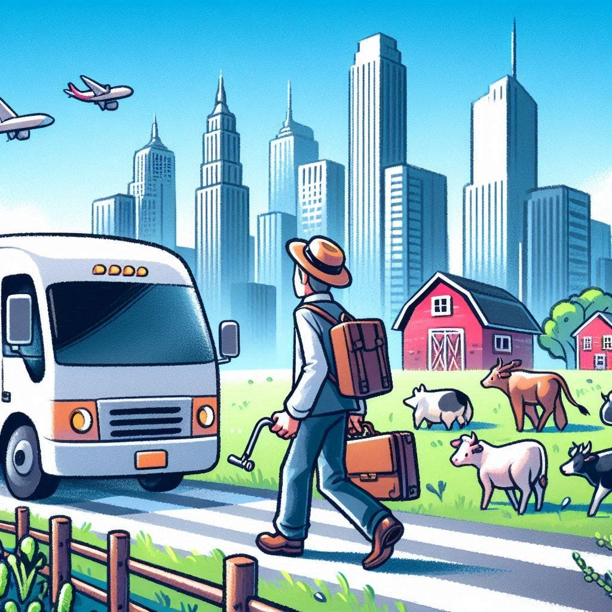

Descubra o Projeto Agrinho
Vida na Cidade e no Campo: Vantagens, Desvantagens e A Mudança Entre Eles
Vida na Cidade
Vantagens:
- Oportunidades de Emprego: As cidades oferecem uma ampla gama de oportunidades de trabalho em diversos setores, desde tecnologia e finanças até serviços e cultura. O acesso a empregos especializados e com salários potencialmente mais altos é uma vantagem significativa.
- Infraestrutura e Serviços: Cidades geralmente têm uma infraestrutura bem desenvolvida, com acesso a serviços públicos como saúde, educação e transporte. Hospitais, escolas e universidades tendem a ser mais acessíveis e diversificados.
- Cultura e Lazer: As cidades são centros culturais vibrantes, com uma vasta oferta de eventos, museus, teatros, cinemas e restaurantes. A vida noturna e a variedade de atividades sociais proporcionam uma rica experiência cultural.
- Transporte Público: O transporte público urbano é geralmente eficiente e acessível, com opções como ônibus, metrôs e trens que facilitam a locomoção e reduzem a necessidade de possuir um carro.
Desvantagens:
- Custo de Vida: O custo de vida nas cidades pode ser bastante elevado, com despesas significativas relacionadas a moradia, alimentação e transporte. A competição por moradias e serviços pode fazer com que os preços sejam altos.
- Poluição e Congestionamento: Cidades grandes enfrentam problemas de poluição do ar e congestionamento de trânsito, o que pode afetar a saúde e a qualidade de vida dos residentes.
- Ritmo Acelerado: A vida urbana pode ser estressante devido ao ritmo rápido e à alta densidade populacional. O ambiente competitivo pode contribuir para um aumento no nível de estresse.
- Espaço e Privacidade: Em áreas urbanas, a disponibilidade de espaço pode ser limitada, e a vida em apartamentos pequenos pode comprometer a privacidade e o conforto pessoal.
Vida no Campo
Vantagens:
- Qualidade de Vida e Ambiente: A vida no campo oferece um ambiente mais tranquilo e saudável, com ar puro e menos poluição. O contato com a natureza e um ritmo de vida mais relaxado contribuem para uma qualidade de vida superior.
- Custo de Vida: Geralmente, o custo de vida no campo é mais baixo, especialmente em relação a moradia e alimentação. Isso pode permitir uma vida mais econômica e menos pressionada financeiramente.
- Espaço e Privacidade: No campo, é comum encontrar mais espaço e privacidade. Casas maiores com jardins e áreas externas proporcionam um ambiente mais confortável e relaxante.
- Comunidade e Tradições: As comunidades rurais tendem a ser mais unidas e tradicionais, com laços sociais fortes e um senso de pertencimento que pode ser reconfortante.
Desvantagens:
- Oportunidades de Emprego: O mercado de trabalho no campo pode ser mais limitado e menos diversificado, com menos oportunidades em setores especializados. Isso pode restringir as opções de carreira.
- Infraestrutura e Serviços: Os serviços públicos e a infraestrutura podem ser menos desenvolvidos em áreas rurais. O acesso a hospitais, escolas e serviços de transporte pode ser limitado e exigir viagens longas.
- Isolamento e Entretenimento: A vida no campo pode ser mais isolada, com menos opções de entretenimento e atividades culturais. A falta de eventos e locais de lazer pode levar a uma vida mais solitária.
- Transporte: Em áreas rurais, o transporte público é frequentemente limitado, e possuir um carro pode ser essencial para se locomover e acessar serviços básicos.
Mudança do Campo para a Cidade e Vice-Versa
Do Campo para a Cidade:
A transição do campo para a cidade pode ser desafiadora e envolve adaptações significativas. Os recém-chegados precisam se ajustar ao ritmo acelerado da vida urbana, enfrentar o custo de vida mais alto e lidar com a poluição e o congestionamento. No entanto, a mudança também oferece acesso a novas oportunidades de emprego, serviços e uma rica vida cultural.
Da Cidade para o Campo:
Mover-se do ambiente urbano para o rural pode trazer uma sensação de alívio e tranquilidade, mas também apresenta desafios. A adaptação ao ritmo mais lento e à menor disponibilidade de serviços e oportunidades pode ser difícil. No entanto, a vida no campo proporciona um ambiente mais saudável, menor custo de vida e uma maior privacidade e contato com a natureza.
Cada ambiente tem suas próprias vantagens e desvantagens, e a escolha entre o campo e a cidade depende das prioridades e preferências individuais. A adaptação a uma nova realidade, seja em uma cidade ou no campo, exige planejamento e abertura para novas experiências.
.jpg) 
